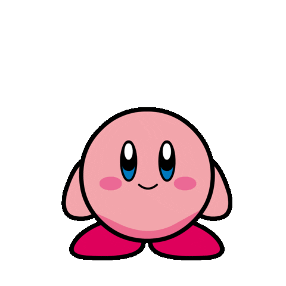
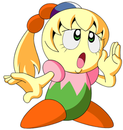
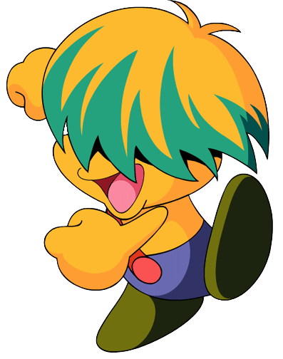
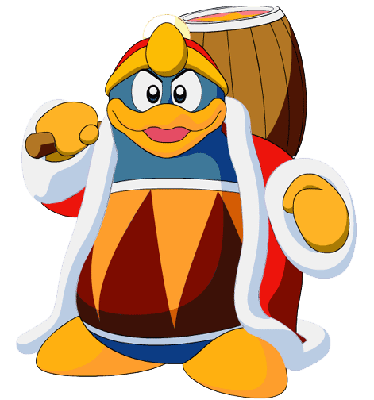
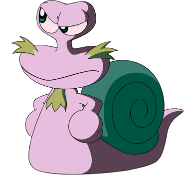
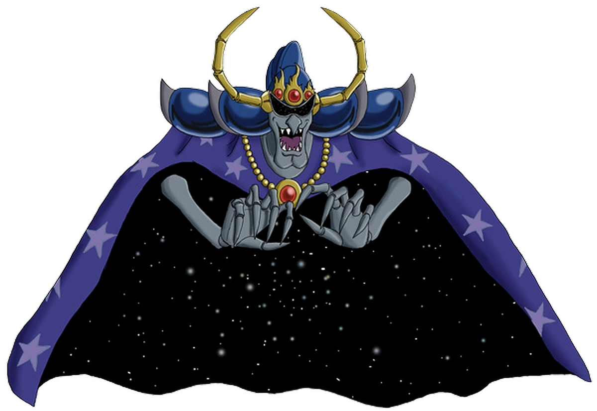

PERSONAJES DEL ANIME
-Kirby-
-カービイ Kābī en Japonés-
Kirby es descrito como una criatura esférica de color rosa que vive en el planeta Pop Star. Su principal habilidad es absorber objetos y enemigos para lanzarlos en forma de estrella o bien tragárselos y copiar sus habilidades.También es capaz de expandir su cuerpo con aire para sobrevolar el escenario. No habla mucho, tiende a solo decir "poyo", ciertos personajes como Meta Knight han actuado como si lo entienden y Kirby lo usa para expresarse.

-Tiff-
-フーム Fūmu en japonés-
Tiff es la hija mayor del ministro del gabinete. Ella ha vivido en el castillo de Dedede toda su vida. Su personalidad puede ser cortante, atenuada y, definitivamente, dice lo que piensa, sobre todo cuando ella piensa que el Rey Dedede esta tramando algo malvado. Tiff es la única que puede convocar de Kirby Warp estrella, una estrella voladora que aparece cuando kirby está en peligro. Meta Knight dijo que Kirby no puede mantenerse a salvo a sí mismo, asi que ambos colaboran para controlarlo y cuidarlo porque ella realmente se preocupa por él.
-Tuff-
-"Bun" en la version Japonesa-
Tuff es el hermano menor de Tiff. Él es ,en muchos aspectos, todo lo contrario a ella, prefiriendo jugar afuera en vez de leer libros. Él puede ser un tanto perturbador, incluso cuando él está realmente tratando de ayudar. Impetuoso y siempre haciendo travesuras, tirando bromas y chistes constantemente. Él ahora es amigo de Kirby, a pesar de que se pone celoso de él a veces.
Rey Dedede
-デデデ大王だいおう Dedede Daiō en japonés-
Rey Dedede es el gobernante de Dream Land. A pesar de que Dedede es codicioso, intrigante, e incluso abiertamente sádico, incluso yendo tan lejos como para decir que el sufrimiento de la gente le divierte, nadie ha tratado de destronarlo porque en realidad él es inofensivo para la mayor parte de la gente, pero su intensa aversión a Kirby le obliga a comprar bestias demoníacas de HolyNightMare Co. y causar el caos para el pueblo de Dream Land. Le encanta comprar nuevos "juguetes" y actúa como un niño mimado, a pesar de su edad. Él es a menudo celoso de la atención que Kirby recibe, y si bien en un primer momento, quería derrotar a Kirby, más tarde, solo centraria en tratar de hacer que se vea mal ante Dream Land. Él tiene un lado amable, pero solo lo muestra en la más extrema de las circunstancias.
-Escargoon-
-Dr. Escargon (ドクター・エスカルゴン) en japonés-
Escargoon vivía con su madre en una granja antes de salir a hacer algo grande. A pesar de que Escargoon tiene conocimientos de química y electrónica, hasta de botanica, ha estado trabajando para Dedede durante muchos años como un simple auxiliar para el y muchas veces, como una bolsa de puñetazos. Aun asi, el realmente se preocupa por el rey y siempre quiere su bienestar. Mientras Escargoon generalmente va de la mano con lo que Dedede quiere y le ayuda con sus planes, en realidad tiene un buen corazón, solo que actúa haciendo el mal porque quiere la aprobación de Dedede.
-Nightmare-
Nightmare es el antagonista principal de la serie y el presidente de Nightmare Enterprises. Pesadilla sólo aparece en las sombras durante la mayor parte de la serie, su forma completa solamente se ve al final del penúltimo episodio, y en el final de la serie. Muy poco se sabe acerca de él o sus orígenes, pero como su nombre indica, es una pesadilla viviente. Se nutre de sufrimiento, creando monstruos para vender en su empresa y utilizar en sus ejércitos para continuar su conquista del universo con el fin de traer a sí mismo más poder. También emite la ilusión de ser invencible, ya que puede abrir su capa y chupar todos los ataques en la zona donde el estómago y el pecho debe ser.
-Meta Knight-
-メタナイト, Meta Naito en japonés-

Meta Knight trabaja para Dedede, así, junto con sus seguidores Sword Knight y Blade Knight. Sin embargo, se revela que Meta Knight es un guerrero de la estrella como Kirby, y uno de los únicos que sobreviven a la guerra con la pesadilla. Él lleva la espada sagrada Galaxia, que sólo unos pocos pueden manejar. Meta Knight aparece como una especie de maestro, ayudando a Kirby y otros. Tiene la costumbre de aparecer de la nada para ayudar a Kirby y sus amigos en tiempos de necesidad. Él es el segundo Guerrero estrella más fuerte en el universo, después de Kirby.